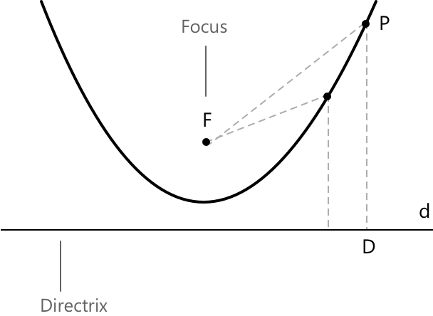
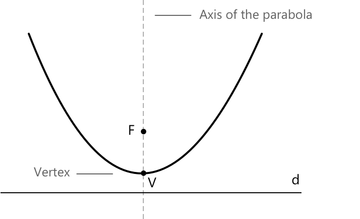
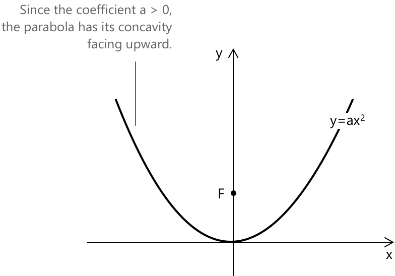
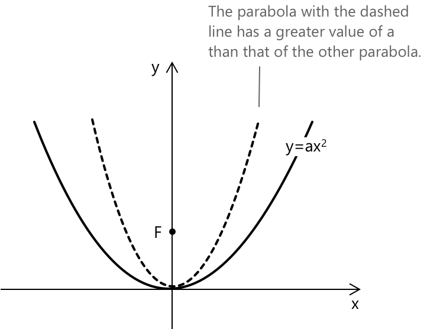
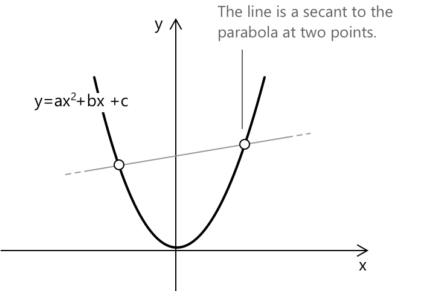
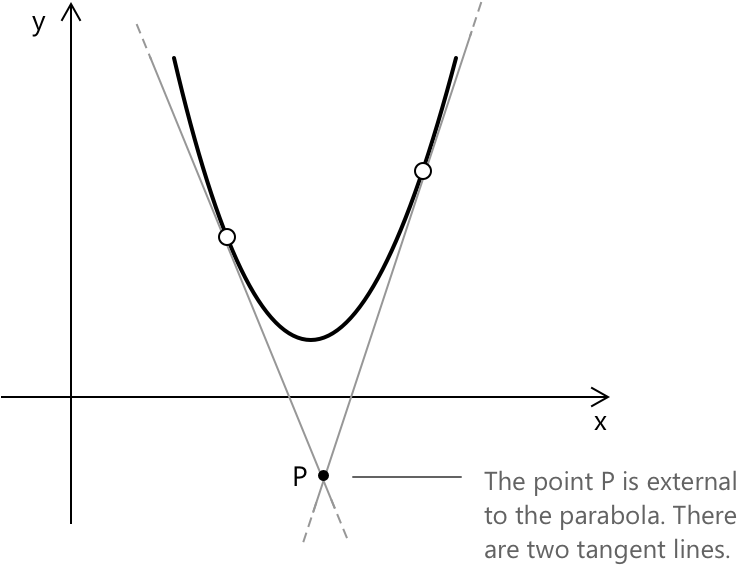

Парабола
Вступ до конічних перетинів
Коли площина перетинає конус, фігура, що утворюється в перетині, при проекції на площину може бути окружністю, параболою, еліпсом або гіперболою. Ці криві разом відомі як конічні перетини, або просто коніки. У більш формальних термінах, конік — це плоска алгебраїчна крива другого степеня, визначена як множина точок \( (x, y) \in \mathbb{R}^2 \), що задовольняють квадратному рівнянню зі змінними \( x \) та \( y \):
\[ f(x, y) = a_{11}x^2 + 2a_{12}xy + a_{22}y^2 + 2a_{13}x + 2a_{23}y + a_{33} = 0 \]
де коефіцієнти \( a_{ij} \in \mathbb{R} \), причому \( a_{11} \) та \( a_{22} \) є ненульовими, щоб рівняння було дійсно квадратичним.
Кожен коефіцієнт несе певну геометричну інформацію про конік.
- \( a_{11} \), \( a_{22} \) визначають кривизну вздовж осей x та y відповідно. Вони впливають на форму (еліпс, гіпербола, парабола) та орієнтацію коніка.
- \( a_{12} \) керує поворотом коніка. Якщо \( a_{12} = 0 \), конік вирівняний за координатними осями.
- \( a_{13} \), \( a_{23} \) впливають на положення коніка на площині. Вони діють як члени перенесення вздовж осей x та y.
- \( a_{33} 1\)визначає загальне положення кривої відносно початку координат; його можна розглядати як сталу, що зміщує графік вгору/вниз або вліво/вправо залежно від контексту.
Вироджений конік
Якщо поліном \( f(x, y)\ \) можна розкласти як добуток двох лінійних поліномів:
\[ f(x, y) = (ax + by + c)(a’x + b’y + c’) = 0 \]
де \(a, b, c, a’, b’, c’ \in \mathbb{C}\), то такий конік називається виродженим.
Вироджений конік не представляє собою належну криволінійну фігуру, таку як парабола, еліпс або гіпербола. Замість цього він відповідає простішим геометричним об'єктам, таким як пара прямих, одна пряма або в деяких випадках порожня множина.
Парабола
Парабола — це плоска крива, визначена як множина всіх точок, які рівновіддалені від фіксованої точки \(F \), що називається фокусом, і фіксованої прямої \( d \), що називається директрисою.

Довжина відрізка \( \overline{FP} \) дорівнює довжині відрізка \( \overline{PD} \). Парабола є одним із так званих конічних перетинів, до яких також належать коло, еліпс і гіпербола. Ці криві можна отримати, перетинаючи конічну поверхню площиною. Конкретна крива, що утворюється, залежить від кута, під яким площина перетинає конус.
Пряма, що проходить через фокус і перпендикулярна до директриси, називається віссю параболи. Точка \( V \), де парабола перетинає цю вісь, відома як вершина.

Рівняння параболи з вершиною в початку координат і віссю, що збігається з віссю y декартової площини, має вигляд:
\[y = ax^2, \quad a \neq 0\]
Кожна парабола, що задовольняє цьому рівнянню, є симетричною відносно осі y. У випадку, коли коефіцієнт \( a = 0 \), парабола називається виродженою, і рівняння набуває вигляду \( y = 0 \). Координати фокуса:
\[F = \left( 0, \frac{1}{4a} \right)\]
Рівняння директриси:
\[y = - \frac{1}{4a} \]
Коли коефіцієнт \( a > 0 \), парабола відкривається вгору. Отже, \( y \geq 0 \) для будь-якого значення \( x \). Фокус також розташований на позитивній півосі y.

Коефіцієнт \( a \) визначає іншу характеристику параболи, а саме її ширину або розмах. Якщо \( a > 0 \), то зі збільшенням значення \( a \) розмах стає вужчим. Аналогічно, якщо \( a < 0 \), то зі збільшенням абсолютного значення \( a \) розмах також стає вужчим.

Парабола у стандартній квадратичній формі
Тепер розглянемо загальний випадок рівняння параболи, вісь якої паралельна осі y. Рівняння задано як:
\[y = ax^2 + bx + c \quad \text{де} \quad a \neq 0\]
Рівняння, що описує параболу, є рівнянням другого степеня.
Рівняння осі задано як:
\[x = -\frac{b}{2a}\]
Координати вершини задано як:
\[V \left( -\frac{b}{2a}, \, -\frac{\Delta}{4a} \right)\]
де \( \Delta = b^2 - 4ac \) є дискримінантом квадратичного рівняння.
Координати фокуса:
\[F \left( -\frac{b}{2a}, \, \frac{1 - \Delta}{4a} \right)\]
Рівняння директриси:
\[y = -\frac{1 + \Delta}{4a}\]
Графічно загальна парабола \(y = ax^2 + bx + c\) з віссю, паралельною осі y, виглядає наступним чином:

-
Коли \( b = 0 \) та \( c \neq 0 \), рівняння набуває вигляду \(y = ax^2 + c\). Вершина параболи знаходиться в точці \( V(0, c) \), а її віссю симетрії є вісь y.
-
Випадок: \( c = 0 \) та \( b \neq 0 \), рівняння набуває вигляду \(y = ax^2 + bx\). Вершина параболи знаходиться в точці: \[ V \left( -\frac{b}{2a}, -\frac{b^2}{4a} \right) \] Парабола завжди проходить через початок координат ( 0, 0 ).
Тепер розглянемо, як визначити точки перетину, якщо вони існують, між параболою та довільною прямою з рівнянням \( y = mx + q \). Для цього нам потрібно розв'язати систему рівнянь, що складається з рівняння прямої та рівняння параболи. Отримаємо:
\[ \begin{cases} y = ax^2 + bx + c \\[0.5 em] y = mx + q \end{cases} \]
Виконавши обчислення, отримаємо:
\[ \begin{align} &ax^2 + bx + c = mx + q\\[0.5 em] &ax^2 + bx + c – mx – q = 0\\[0.5 em] &ax^2 + x(b- m) +c – q = 0 \end{align} \]
Розв'язання рівняння \((5)\) представляють \( x \)-координати точок перетину параболи та прямої. Оскільки ми маємо справу з квадратичним рівнянням, може бути не більше двох різних розв'язків. Точніше, кількість розв'язків залежить від значення дискримінанта \( \Delta \) наступним чином:
- Якщо \( \Delta > 0 \), розв'язки є дійсними та різними, і пряма перетинає параболу у двох точках. У цьому випадку пряма називається січною.
- Якщо \( \Delta = 0 \), розв'язки є дійсними та збігаються, і пряма є дотичною до параболи в одній точці.
- Якщо \( \Delta < 0 \), розв'язків немає, і пряма лежить зовні параболи.
Нижче наведено зображення січної прямої, що перетинає параболу у двох точках.

Тепер розглянемо точку \( P \) на площині та визначимо прямі, що проходять через цю точку і є дотичними до параболи. Існує три можливих випадки:
- Обидві прямі є дотичними до параболи: у цьому випадку точка \(P\) лежить зовні параболи.
- Лише одна пряма є дотичною до параболи: у цьому випадку точка \(P\) лежить на параболі.
- Не існує жодної прямої, дотичної до параболи: у цьому випадку точка \(P\) лежить всередині параболи.

Щоб знайти рівняння прямих, що проходять через задану точку \( P(x_0, y_0) \) і є дотичними до параболи, заданої рівнянням \( y = ax^2 + bx + c \), необхідно скласти та розв'язати систему, що складається з рівняння параболи та рівняння пучка прямих, які проходять через \( P \). Маємо:
\[ \begin{cases} y – y_0 = m(x – x_0) \\[0.5em] y = ax^2 + bx + c \end{cases} \]
Щоб накласти умову дотичності, необхідно прирівняти до нуля визначник \( \Delta \) рівняння, отриманого з системи. Потім розв'язуємо відносно \( m \) і підставляємо отримані значення в рівняння пучка прямих.
Приклад
Визначте рівняння будь-яких прямих, що проходять через \( P(3, -6) \) і є дотичними до параболи, заданої рівнянням \( y = x^2 – 4 \).
Загальне рівняння пучка прямих має вигляд:
\[y – y_0 = m(x – x_0)\]
Підставляючи значення \( x_0 = 3 \) та \( y_0 = -6 \) точки \( P(3, -6) \), отримаємо:
\[y + 6 = m(x – 3)\]
Система набуває вигляду:
\[ \begin{cases} y = x^2 - 4 \\[0.5em] y + 6 = m(x - 3) \end{cases} \]
Отримаємо: \[x^2 – 4 = m(x-3) – 6 \rightarrow x^2 -mx +3m -2 = 0 \]
Тепер визначимо значення \( \Delta \), враховуючи, що \( a = 1 \), \( b = -m \), та \( c = 3m – 2 \). Маємо:
\[\Delta = m^2 -12m - 8\]
Застосовуємо умову дотичності, прирівнявши \( \Delta = 0 \) та розв'язавши рівняння другого степеня.
\[m^2 -12m – 8 = 0 \rightarrow m_1, m_2 = \frac{12 \pm \sqrt{144+32}}{2}\]
Спрощуючи вираз, отримаємо:
\[ m_1 = 6 – 2\sqrt{11}, \quad m_2 = 6 + 2\sqrt{11} \]
Підставляючи ці значення в рівняння пучка прямих, отримаємо:
\[y = \left(6 – 2\sqrt{11}\right)\left(x - 3\right) -6 \] \[y = \left(6 + 2\sqrt{11}\right)\left(x – 3\right) - 6\]
Отже, рівняння двох дотичних мають вигляд:
\[ \begin{align*} y &= \left(6 - 2\sqrt{11}\right)x + 6\sqrt{11} – 24 \\[0.5em] y &= \left(6 + 2\sqrt{11}\right)x - 6\sqrt{11} – 24 \end{align*} \]